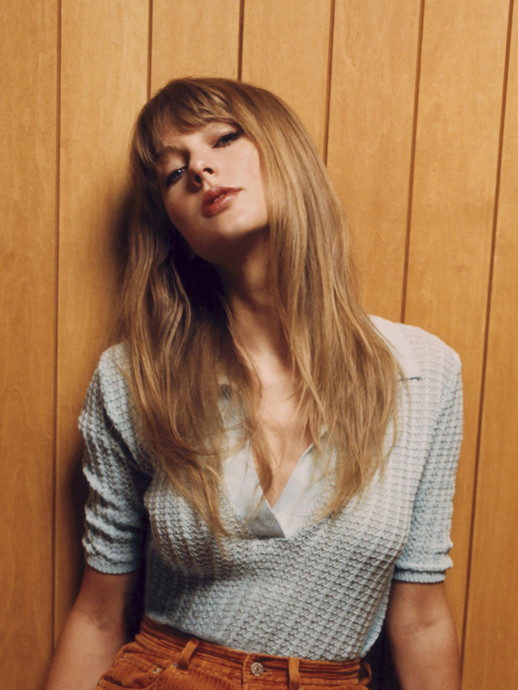

Coquettes
As mais ouvidas da Taylor Swift
Músicas
equipe
.png)
Músicas
equipe
Taylor Swifit, cantora e compositora, uma das mais escutadas ano passado. A loirinha fez sua 1° aparição no Brasil em 2023 durante a sua Turnê The Eras Tour. E sem dúvidas pode ser considerada como uma das pessoas mais influentes na atualidade.
Quer saber quais são as músicas da loirinha mais ouvidas atualmente?
1° Cruel Summer(Álbum Lover)
2° Lover (Álbum Lover)
3° Anti-Hero (Álbum Midnights)
Essa música do álbum Lover aborda como principal tema o amor que durou um verão, ainda não se sabe ao certo, mas muitos fãs acreditam que a música foi escrita para o ator Tom Hiddleston, pois afinal o romance do casal durante somente um verão.
Atualmente 2.001.144.885 pessoas escutam essa música.

Já essa música como o nome indica também pertence ao Álbum Lover, porém ela foi feita para Joe Alwyn, onde na época os dois estavam vivendo um amor maduro e estável segundo a música.
seus ouvintes são em torno de 1.347.447.62

Essa música pertence ao Álbum Midnights, seu diferencial é que ela não foi escrita para um ex namorado da cantora, mas sim sobre e para ela mesma, onde ela aborda uma jornada introspectiva e autocrítica, mostrando suas inseguranças e medos.
1.507.128.735 são em média os ouvintes dessa música que foi um hit.
